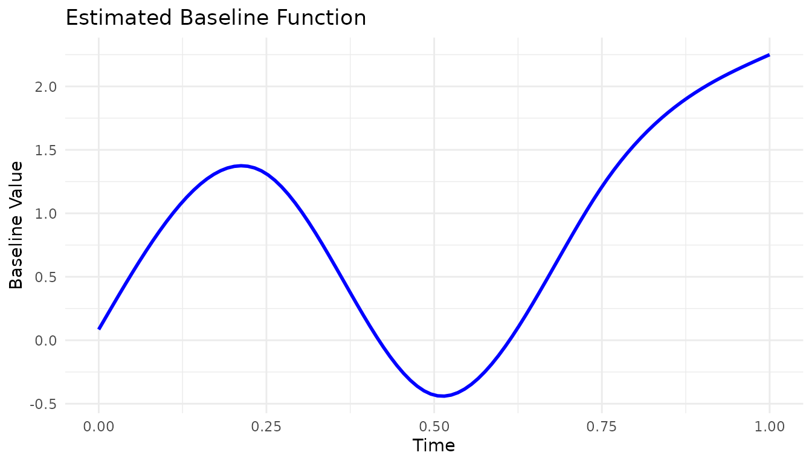

Overview
skmle fits transformed hazards survival models when
longitudinal covariates are observed sparsely and intermittently over
time.
The package currently provides three main user-facing workflows:
-
skmle()for the general transformed hazards model. -
kee_cox()for the proportional hazards estimating-equation approach. -
kee_additive()for the additive hazards estimating-equation approach.
This vignette shows the usual modeling workflow: simulate data, fit a model, inspect the summary output, plot the estimated baseline component, and select a bandwidth by cross-validation.
Simulate Example Data
set.seed(123)
dat <- sim_skmle_data(
n = 80,
mu = function(tt) 8 * (0.75 + (0.5 - tt)^2),
mu_bar = 8,
alpha = function(tt) 0.5 * 0.75 + 0.75 * (tt * (1 - sin(2 * pi * (tt - 0.25)))),
beta = c(1, -0.5),
s = 0,
cen = 0.7
)
head(dat)
#> # A tibble: 6 × 6
#> id X delta covariates[,1] [,2] obs_times censoring
#> <chr> <dbl> <lgl> <dbl> <dbl> <dbl> <dbl>
#> 1 1 0.827 TRUE -0.226 0 0.129 0.930
#> 2 1 0.827 TRUE -0.864 0 0.217 0.930
#> 3 1 0.827 TRUE -0.864 0 0.247 0.930
#> 4 1 0.827 TRUE -0.834 0 0.433 0.930
#> 5 1 0.827 TRUE 0.110 0 0.798 0.930
#> 6 2 0.509 TRUE 0.418 1 0.288 0.865The simulated data are stored in long format. Each row corresponds to one observed longitudinal measurement time for one subject.
The key columns are:
-
id: subject identifier -
X: observed event or censoring time -
delta: event indicator -
covariates: observed covariate values at that visit time -
obs_times: longitudinal observation time
Fit the General Transformed Hazards Model
The covariates column returned by
sim_skmle_data() is a matrix. You can either use it
directly in the formula or split it into separate columns. Using the
matrix directly is convenient for routine work.
fit_skmle <- skmle(
Surv(X, delta) ~ covariates,
data = dat,
id = id,
obs_times = obs_times,
s = 0,
h = 0.5,
nknots = 3,
norder = 3
)
fit_skmle
#> Call:
#> skmle(formula = Surv(X, delta) ~ covariates, data = dat, id = id,
#> obs_times = obs_times, s = 0, h = 0.5, nknots = 3, norder = 3)
#>
#> Coefficients:
#> covariates1 covariates2
#> 1.1034515 -0.6214752The printed object gives the fitted coefficients. As in many R model
objects, the formatted inferential output is produced by
summary().
summary(fit_skmle)
#> Call:
#> skmle(formula = Surv(X, delta) ~ covariates, data = dat, id = id,
#> obs_times = obs_times, s = 0, h = 0.5, nknots = 3, norder = 3)
#>
#> n= 80
#>
#> Estimate Std. Error z value Pr(>|z|)
#> covariates1 1.10345 0.34655 3.1841 0.001452 **
#> covariates2 -0.62148 0.35735 -1.7391 0.082015 .
#> ---
#> Signif. codes: 0 '***' 0.001 '**' 0.01 '*' 0.05 '.' 0.1 ' ' 1
#>
#> Log-likelihood: -0.1486The summary table reports:
- coefficient estimates
- standard errors
- z statistics
- p-values
Plot the Estimated Baseline Component
plot(fit_skmle)
This plot visualizes the estimated nonparametric baseline component from the sieve fit.
Fit the Specialized Estimating-Equation Methods
When the model of interest matches one of the specialized settings, the package also provides dedicated estimating-equation estimators.
Cox-Type Estimator
fit_kee_cox <- kee_cox(
Surv(X, delta) ~ covariates,
data = dat,
id = id,
obs_times = obs_times,
h = 0.5
)
summary(fit_kee_cox)
#> Call:
#> kee_cox(formula = Surv(X, delta) ~ covariates, data = dat, id = id,
#> obs_times = obs_times, h = 0.5)
#>
#> n= 80
#>
#> Estimate Std. Error z value Pr(>|z|)
#> covariates1 1.01867 0.33405 3.0495 0.002292 **
#> covariates2 -0.57047 0.36633 -1.5572 0.119414
#> ---
#> Signif. codes: 0 '***' 0.001 '**' 0.01 '*' 0.05 '.' 0.1 ' ' 1Additive Hazards Estimator
For the additive hazards estimator, simulate data under
s = 1.
set.seed(456)
dat_add <- sim_skmle_data(
n = 80,
mu = function(tt) 8 * (0.75 + (0.5 - tt)^2),
mu_bar = 8,
alpha = function(tt) 0.75 + 0.75 * (tt * (1 - sin(2 * pi * (tt - 0.25)))),
beta = c(1, -0.5),
s = 1,
cen = 0.7
)
fit_kee_add <- kee_additive(
Surv(X, delta) ~ covariates,
data = dat_add,
id = id,
obs_times = obs_times,
h = 0.5
)
summary(fit_kee_add)
#> Call:
#> kee_additive(formula = Surv(X, delta) ~ covariates, data = dat_add,
#> id = id, obs_times = obs_times, h = 0.5)
#>
#> n= 80
#>
#> Estimate Std. Error z value Pr(>|z|)
#> covariates1 1.28942 0.48935 2.6349 0.008415 **
#> covariates2 0.18235 0.61387 0.2970 0.766429
#> ---
#> Signif. codes: 0 '***' 0.001 '**' 0.01 '*' 0.05 '.' 0.1 ' ' 1Select a Bandwidth by Cross-Validation
Bandwidth selection can be handled by skmle_cv().
set.seed(999)
cv_fit <- skmle_cv(
Surv(X, delta) ~ covariates,
data = dat,
id = id,
obs_times = obs_times,
s = 0,
K = 3,
h_grid = c(0.3, 0.4, 0.5),
nknots = 3,
norder = 3,
quiet = TRUE
)
cv_fit$h_cv
#> [1] 0.3
cv_fit$cv_results
#> h cvloss
#> 1 0.3 0.4468373
#> 2 0.4 0.5407109
#> 3 0.5 0.5761745The returned object contains:
- the selected bandwidth
- the refitted
skmlemodel at that bandwidth - the cross-validation loss table
You can then inspect the final refit in the usual way.
summary(cv_fit$fit)
#> Call:
#> skmle::skmle(formula = Surv(X, delta) ~ covariates, data = dat,
#> id = id, obs_times = obs_times, s = 0, h = 0.3, nknots = 3,
#> norder = 3)
#>
#> n= 80
#>
#> Estimate Std. Error z value Pr(>|z|)
#> covariates1 1.25336 0.37824 3.3136 0.0009209 ***
#> covariates2 -0.59265 0.39263 -1.5094 0.1311920
#> ---
#> Signif. codes: 0 '***' 0.001 '**' 0.01 '*' 0.05 '.' 0.1 ' ' 1
#>
#> Log-likelihood: -0.04403Typical Workflow
For routine use, the usual sequence is:
- Prepare data in long format with one row per observation time.
- Fit
skmle()if you want the general transformed hazards model. - Use
summary()andplot()to inspect the fitted model. - Use
skmle_cv()if you want data-driven bandwidth selection. - Use
kee_cox()orkee_additive()when the scientific model matches those specialized estimators.
This gives a standard R model-fitting interface while keeping the core numerical work in the Rcpp backend.